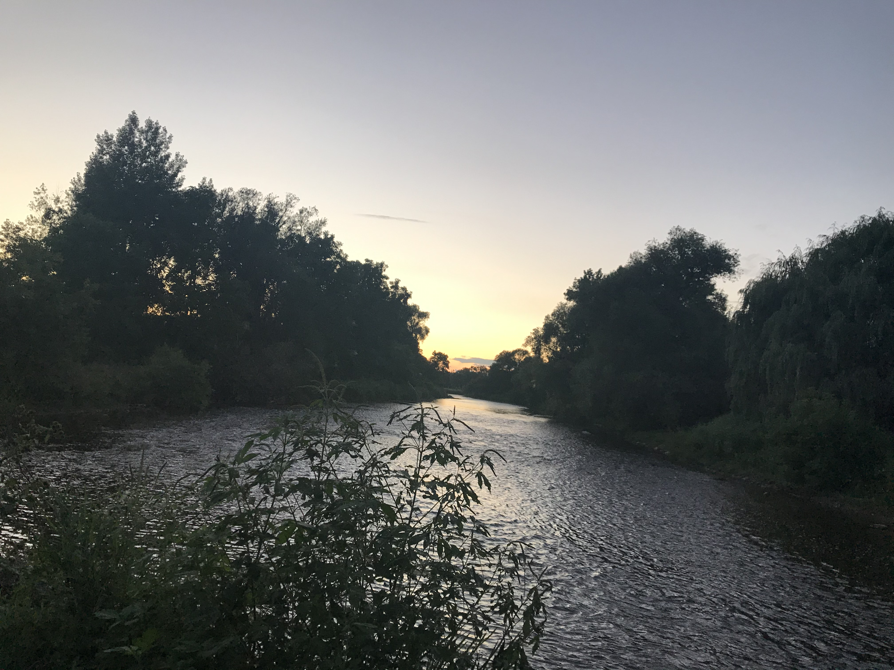

This journal will be dedicated to all the enviroment/ biology related items I encounter in my
daily life. I will include images of nature walks with short captions on each image.

I live beside the Credit River, so I love jogging near the river in the afternoon. I was always
love looking at the different plants on the edge of river. The river and the surrounding area has its own little ecosystem.